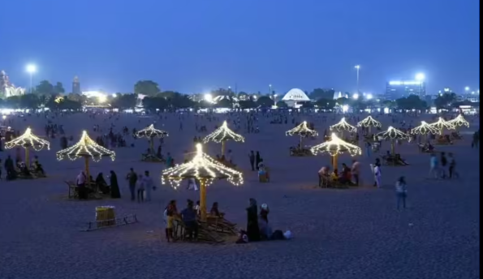

MARINA BEACH
Marina Beach is India's longest and the world's second-longest natural urban beach, located in Chennai along the Bay of Bengal. Stretching approximately 13 kilometers, it's a major city landmark and a popular spot for recreation, offering views of the sea and featuring statues of historical figures.